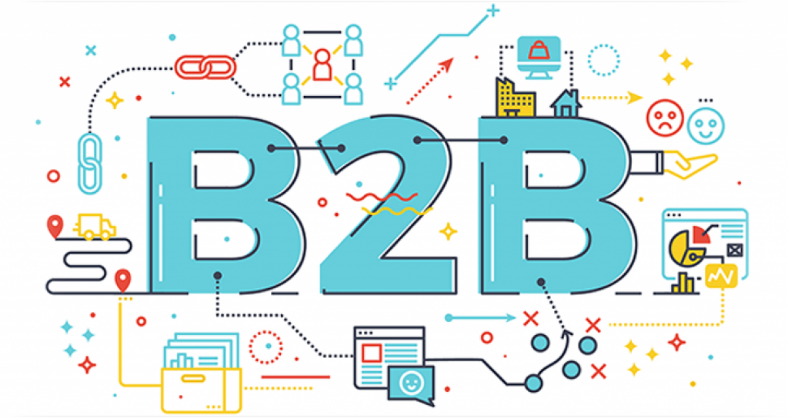

Business-to-Business
El comercio electrónico B2C es la venta en línea de productos o servicios de una empresa a los consumidores finales. El mercado B2C (Business to consumer), que traducido sería del comercio al consumidor, se refiere a un modelo de negocio directo. Esto es, el empresario vende lo que oferta directamente sin intermediarios, entre él y el consumidor final. modelo de negocio electrónico de miles de millones (incluso billones) de dólares. ... Resulta natural entonces que cientos de miles de empresas alrededor del planeta quieran aprovechar esta oportunidad de negocio, implementando sus comercios electrónicos enfocados a ventas a consumidores finales Business-to-Consumer (B2C) Hacen referencia al comercio de empresas a particulares. En este caso las empresas ofrecen sus servicios o productos a través de la web. Algunos ejemplos serían Amazon, Carrefour, MediaMarkt, etc.En las ventas en línea de los B2C, generalmente hay cinco modelos.
- Vendedores directos: Este es el modelo con el que la gente está más familiarizada- son las tiendas en línea donde los consumidores compran sus productos. Pueden ser fabricantes como Gap o Dell o negocios más pequeños que crean y venden el producto, pero también pueden ser versiones en línea de tiendas departamentales de muchas marcas y fabricantes. Ejemplos incluyen Target.com, Macys.com y Zappos.com
- Intermediarios en línea: Estos intermediarios ponen a los compradores y a los vendedores juntos sin tener el producto o servicio. Ejemplos incluyen sitios de viajes en línea como Expedia y Trivago y la tienda de arte y artesanía Etsy. Basados en la publicidad: Este enfoque apalanca alto volumen de tráfico web para vender publicidad la cual, sucesivamente, vende producto y servicios al consumidor. Este modelo usa contenido gratis de alta calidad para atraer visitantes al sitio web, que luego encontrarán anuncios en línea.
